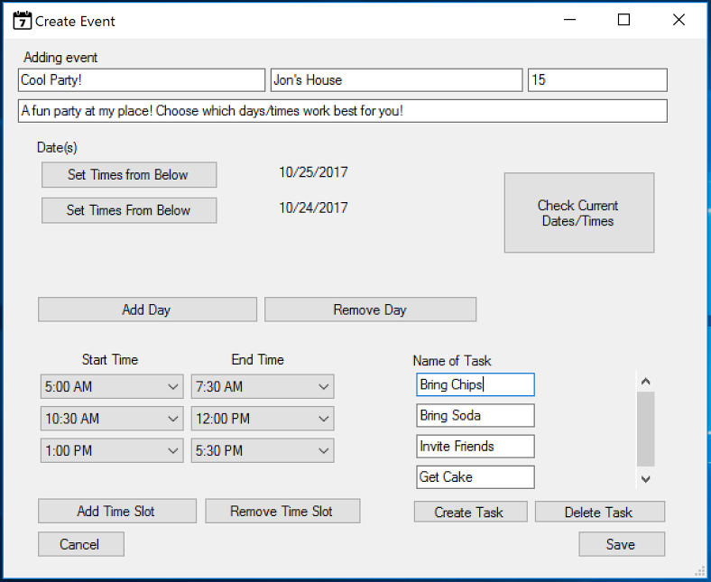
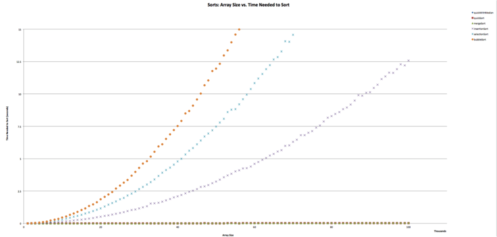

Projects
Needle - Flask, MySQL

Created a "Rotten Tomatoes" style platform for Spotify, allowing users to search for their friends and rate their playlists and songs. We used the Flask microframework in tandem with a MySQL database in order to create a working product very quickly. This was a weekend project for the Hack K-State Hackathon. GitHub DevPost Submission
Tomatobot Slack Integration

Event Scheduling App - C#

Developed and integrated task creation and management for an Event Scheduling desktop application written in C#. Worked on a team of three to add functionality to an app inherited from another team of developers. Developed skills in software development in a team setting, and gained experience with C# in Visual Studio. GitHub
Programming Coursework
Here is a GitHub Repository detailing solutions to problems based in understanding data structures and other fundamental OOP concepts.
Scales Collective

I currently produce and edit content for the Scales Podcast, the first ever Podcast about competitive yoyoing and the culture surrounding it. Team Scales has existed since 2015, with the goal of taking a data-oriented, analytical approach to yoyo competitions. I'm currently working with the National Yoyo League to make improvements to current judging practice and improve yoyoing in the US as a whole.
Brief Experiences Overview
Education
Pursuing BSCS, Mathematics Minor | University of Kansas | Class of 2019.
Cum. GPA: 3.42 | Engineering GPA: 3.84
Work Experiences
Larimer County Conservation Corps (Summer 2017)

I co-led a team of high school students in building sustainable hiking trails in Northern Colorado while reporting project outcomes to company executives. I refined my skills in leadership, management, communication and developed a much stronger work ethic as a result of this experience. I also feel that I grew substantially as a person as a result of this experience, and learned how to be patient and open to empowering others in their leadership
MMA Design LLC (Summer 2016)

I worked as an engineering intern with MMA Design, an aerospace engineering firm specializing in deployable structures. In my time with MMA, I helped administer engineering confidence tests and reported results to project leads, aided in rapid prototyping of aerospace structures, and developed company promotional material. I learned what it's like to work in a fast-paced environment while working at MMA, and really pushed myself from a technical perspective.